Si necesitas certificar un documento para acreditar su veracidad o solicitar la certificación o emisión de un documento con firma manual o digitalizada, conoce los pasos a seguir aquí:
requisitos
Durante el proceso ten en cuenta lo siguiente
Tienes un día útil
para realizar el pago en
los bancos autorizados.
para realizar el pago en
los bancos autorizados.
El trámite se anulará automáticamente si no realizas el pago en el plazo establecido y debes volver a ingresarlo.
Te llegará un mensaje a tu correo electrónico de la UPC cuando:
- Registres el trámite.
- Realices el pago.
- Se responda tu solicitud.
Registro del trámite
Ingresa a Mi UPC con tu usuario y contraseña.
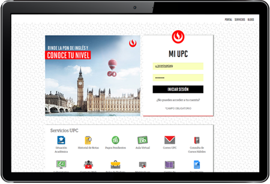
Selecciona la opción “Mis trámites” y haz clic en “Otros trámites”. Luego, elige la opción “Emisión de Certificados y Constancias”.
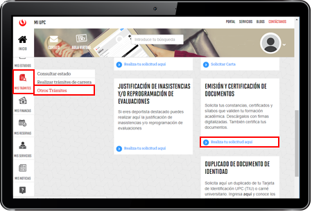
Aparecerá la siguiente pantalla.
Firma Manual:Ingresa a esta opción para solicitar la certificación de tus documentos con firmas manuales. El trámite tiene 10 días útiles de atención como máximo.
Firma Manual:Ingresa a esta opción para solicitar la certificación de tus documentos con firmas manuales. El trámite tiene 10 días útiles de atención como máximo.
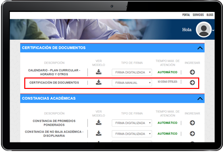
3.1
Al seleccionar Firma Manual:Aparecerá la siguiente pantalla donde visualizarás el formulario y las indicaciones que se muestran en la sección “Importante”.
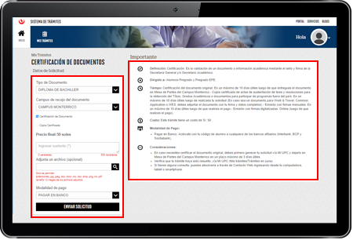
Ingresa los datos en el formulario y haz clic en “Enviar solicitud”.
1. Tipo de Documento: Nombre del documento que requieres certificar y/o solicitar una copia certificada.
2. Certificación de Documento: Opción para indicar que solicitas una certificación de documento.
3. Copia Certificada: Opción para indicar que solicitas una o más copias certificadas del documento (ingresa la cantidad de copias).
4. Precio final: Precio total del trámite, el cual varía según el servicio solicitado y la cantidad de copias que ingresaste.
5. Sustento: Motivo por el cual generas la solicitud. Indicar campus de entrega, y celular de contacto .
6. Adjunta archivo:
Si se tratase de documentos de intercambio y académicos (W&T, The Common Application, WES), entre otros.
Si se tratase de documentos de intercambio y académicos (W&T, The Common Application, WES), entre otros.
Nota: Es indispensable que el formulario/archivo esté completo con datos válidos del alumno.
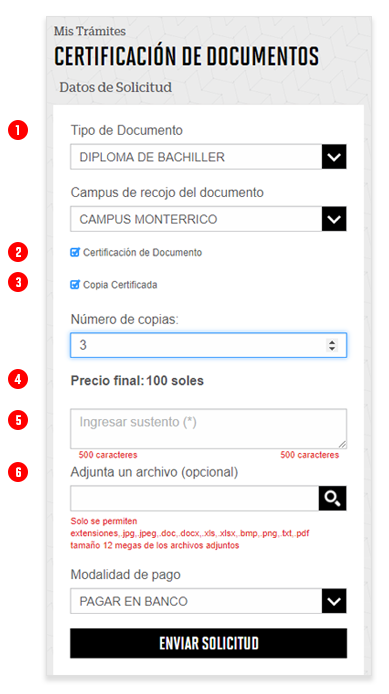
En el caso de Lacrado de sobre (documentos emitidos por UPC y traducciones de los mismos, formatos autorizados), y certificación del documento original (APLICA solo para Título, Bachiller, Constancia de Egresado y certificado de estudios).
- Luego de realizar el pago tienes el plazo de 3 días útiles para entregar el documento original en Mesa de partes .
Horario para recepción de documentación: De Lunes a Viernes de 10:00 am a 12:30 pm y de 2:00 pm a 16:30 pm.
Ubicación: Av. Alonso de Molina N°1611 Santiago de Surco Referencia garita de seguridad (SEDE MONTERRICO). - Luego de entregar el documento en la Mesa de partes del Campus Monterrico tu solicitud será respondida en un plazo máximo de 10 días útiles.
En caso de Copias certificadas de Título/Bachiller . No será necesario que los egresados del 2014 en adelante dejen documento en mesa de partes.
Ingresa los datos en el formulario y haz clic en “Enviar solicitud”.
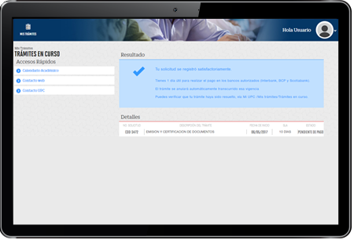
- Luego de haber generado y realizado el pago correspondiente, tu solicitud será respondida en un plazo máximo de 10 días útiles.
- El documento certificado y/o las copias serán enviadas al campus de entrega que indicaste en el sustento de tu solicitud.
SEGUIMIENTO
Ingresa a MI UPC , selecciona la opción “Mis Trámites, haz clic en “Trámites en Curso” y “Consulta de Certificación de Documentos”.
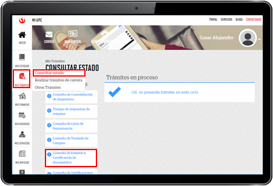
Verifica el estado de tu solicitud.
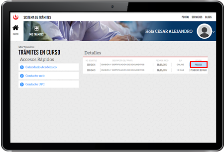
Si tu solicitud de Certificación de Documentos con firmas manuales ha procedido debes hacer clic a la descripción del trámite para desplegar los detalles de la misma, leer atentamente el resultado del trámite y seguir las indicaciones.
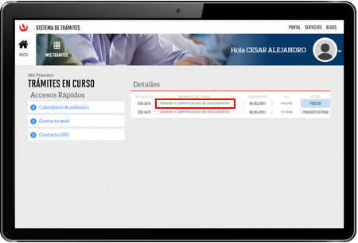
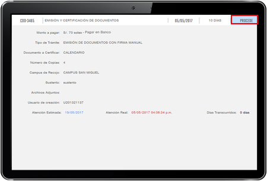
Si tu solicitud corresponde a una Emisión de Documentos con Firmas Digitalizadas y ha procedido, debes hacer clic en la descripción del trámite para desplegar los detalles de la misma y descargar el documento en formato PDF haciendo clic en la opción “Descargar Documento”
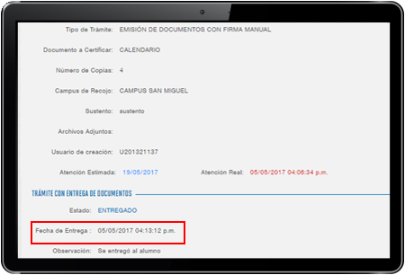
¡No olvides validar tu solicitud!